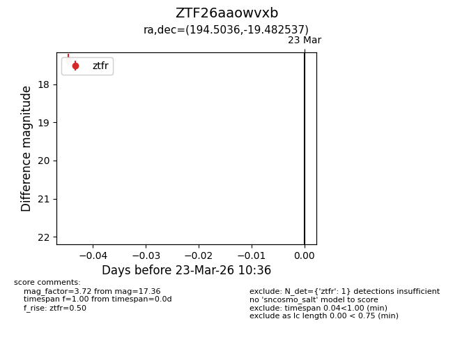
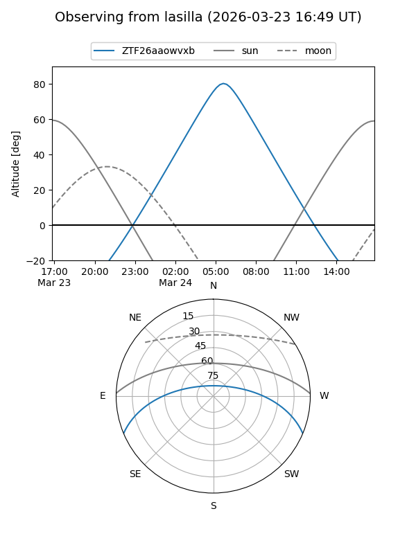
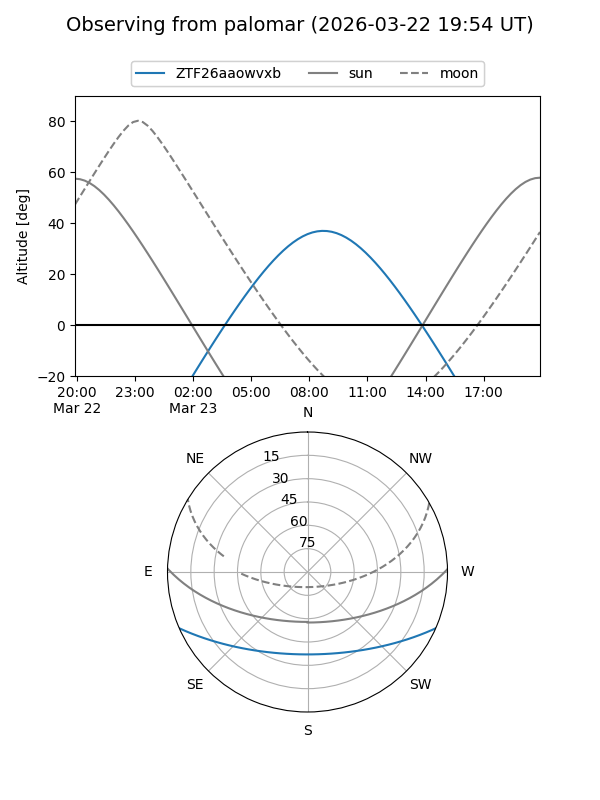

ZTF26aaowvxb
Target ZTF26aaowvxb at 2026-03-23 10:38
Aliases and brokers:
FINK: link
Lasair: link
ALeRCE: link
alt names
ZTF26aaowvxb (ztf,fink_ztf)
Coordinates:
equatorial (ra, dec) = 194.5036,-19.48254
equatorial (HMS+DMS) = 12:58:00.86,-19:28:57.13
galactic (l, b) = (305.0641,+43.36198)
Flags:
Photometry:
last ztfr=17.36
1 ztfr detections
Lightcurve

Visibility


Additional plots